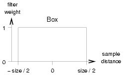
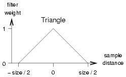
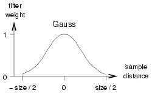
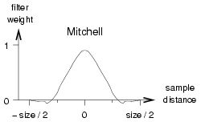

- Options
-
- String Options
- Sampling Quality
- Progressive Rendering 3.7
- Hardware Rendering
- Tessellation Quality
- Motion Blur 3.7
- Depth Limits
- Shadows
- Rendering Algorithms
- Feature Disabling
- Caustics
- Global Illumination
- Final Gathering
- Ambient Occlusion
- Importons
- Irradiance Particles 3.7
- Image-Based Lighting 3.7
- iray Rendering Mode 3.8
- Frame Buffer Control
- Scene Geometry
- Contours
- State Shaders
- Diagnostic Modes
- Miscellaneous
Options
options "name"
option_statements
end options
Options blocks contain global
settings like rendering modes, default or override values for properties
of scene elements, and other general settings. One options block scene
element must be specified to the render
statement to render a scene. Most of the render options values can be
overridden with an appropriate command-line
option.
The following option_statements are supported:
String Options
Traditionally, option names are hardcoded in the .mi syntax and in the
data structures of the programming interface. New options are implemented
as arbitrary name value pairs, where the name of the option is
a quoted string, and the value can be a boolean, string, integer, float,
3 floats, or 4 floats:
"name" on|off
"name" "string"
"name" int
"name" float
"name" float float float
"name" float float float float
Only one option of a given name can be specified; the last option overrides
previous ones of the same name. An integer value may be specified in place of
a float value and some options may contain either 3 or 4 floating point values;
besides these exceptions, values of a wrong type are ignored. Also, misspelled
or unknown options are silently ignored by mental ray.
String options can be freely intermixed with other option statements in
the options block, with one exception: a string option may not be preceded by
a frame buffer n option without a type string; the frame buffer
statement should therefore contain an empty type string
(frame buffer n "").
By convention, option names consist of multiple words separated by a blank
space where the first word specifies the logical group or affected feature
of the option, as in "finalgather mode" "automatic".
The string options provide a more general and flexible syntax to specify
options in the .mi format; the syntax does, however, not specify the semantics
of how specific options are used by mental ray. It is also possible to provide
options which are not known by mental ray but could be used by custom shader
packages using the C++ shader
interface extensions.
Those string options which are supported by mental ray are documented below
in line with all other options.
Sampling Quality
- contrast r g b [a]
- The contrast
controls spatial oversampling.
-
The default is 0.1 0.1 0.1 0.1. If just r g b is
given a defaults to the average of r g b.
-
If neighboring samples differ by more than the color r, g, b,
a, then additional samples are taken controlled by the
recursive supersampling algorithm and
its samples parameters. The contrast is modified based on
the recursion level: at sample level 0, the contrast is used directly;
at sample level 1, the contrast is doubled (effectively requiring a
higher contrast to force another subdivision), and so on. Negative
levels divide the contrast, i.e. use a fraction 1/2 , 1/4 , and so on.
In general, the contrast is multiplied by 2level at
the supersampling level level, which is bounded by samples.
-
This is the primary control of anti-aliasing image quality. Typically values
are 0.1 for r, g, b, and a. Higher values
such as 0.2 or 0.3 reduce quality; lower values increase
quality. Values less than 0.05 do not further increase quality
in most cases. The r, g, b, a components can be specified separately
to allow physiologically correct contrast values; the human eye is much more
sensitive to different shades of green than blue and red, and can only poorly
distinguish shades of blue. The a value should be set to 1.0 if the
matte (alpha) channel is not needed; it is also possible to set a
lower than r, g, b to generate matte channels with a higher quality
than the color image. Note that for high-quality rendering, the
samples parameters must be adjusted.
- The rasterizer does not use this setting.
- time contrast r g b [a]
- The time contrast
controls temporal oversampling for motion
blurred scenes.
- The default is 0.2 0.2 0.2 0.2. If just r g b is
given a defaults to the average of r g b.
- The number of temporal samples is approximately proportional to the
inverse of the time contrast value. Using values for time contrast
that are higher than contrast can speed up motion blur rendering
at the price of more grainy images without degrading the quality of spatial
anti-aliasing. For this reason the mental ray default is chosen much higher
than the spatial contrast.
For fast motion blur, an alternative
non-adaptive sampling technique can be used by setting the time contrast to
0 0 0 and minimum and maximum sampling to the equal relatively high
value, such as 2 2. See the rasterizer for an alternative high-speed
motion blurring algorithm.
- The rasterizer does not use this setting.
- samples [minint ] maxint
- This statement determines the minimum and maximum
sample rate. Each pixel is sampled
at least 2min×2min times
and at most 2max×2max
times. (2n in each direction). If min is
0, each pixel is sampled at least once. Positive values
increase the sample rate; negative numbers reduce the sample rate
to less than one initial sample per pixel
(infrasampling). For example, if min is
1, each pixel is sampled at least 2×2 = 4 times, if
min is -1, at least one sample is taken for 2×2
= 4 pixels. min defaults to -2, which means that at
least one sample per 4×4 = 16 pixels is taken. If min
is chosen too small, small features may be lost if all samples
happen to miss it (if it is found just once in any pixel of a task,
mental ray will analyze the feature and render it correctly). If no
min value is given, max - 2 is used by default. The
defaults for min and max are -2 and 0,
respectively. It is recommended to use max values larger
than or equal to min + 2; the difference should not be
higher than 3. Typical values for min and max
are -2 0 for low-quality preview rendering, -1 1 for
medium-quality rendering, and 0 2 or 1 3 for
high-quality renders. Note that while this option offers simple
control of rendering quality, it is recommended to control quality
with the contrast option, which allows much finer control
and deals more gracefully with high-contrast cases where the
samples option can leave aliasing due to the hard cutoff.
The samples statement should be used only as a hard
sampling limit. If a filter options statement is used to
set a filter other than box 1 1, min and max
must be set to at least -1 0. mental ray enables jittering
by default, unless max is less than 1. The
rasterizer does not use this setting.
- samples minint maxint
defminint defmaxint
- mental ray accepts two optional extra parameters that set the
default object sample limits. In mental ray, objects may constrain
sampling of the pixels they cover. The defminint
and defmaxint parameters apply to pixels where no
objects are seen, or all the objects that are seen have no
samples limit. mental ray will never take fewer than
2min and more than 2max samples
per direction, and in areas with no object sample settings it will
further reduce that range to 2defmin through
2defmax. The defaults are -2 0 -128 127; the
latter two are markers for "no further restrictions" because they
are outside the -2 0 range.
-
samples collect numint
- The rasterizer has a separate pixel sample collection and compositing
phase, which controls the number of samples per pixel-dimension to use for
computing a pixel value. Due to motion blurring, this number can differ from
the number of shading samples taken because shading samples are cached and
re-used along the motion path. Increasing the collect rate improves motion
blurring at little performance cost, unless the -shading_samples
parameter is so low that extra shading sampling points are forced. The
default value for num is 3, which yields 9 samples per pixel.
-
shading samples numscalar
- Shading in the rasterizer is controlled by the shading
samples setting. After geometry has been tessellated according
to the geometry approximation settings, it is further subdivided by
the rasterizer into shading samples. the shading samples
setting controls the number of shading calls per pixel. the default
value is 1.0.
- samples motion numint
- Determines at how many points in time a moving object is
sampled in rasterizer mode. The default is 1, which means that a
moving object is sampled once at shutter open time, and this result
is blurred across the motion path. Higher values than 1 sample at
more points during the shutter interval.
- filter box|triangle|gauss|mitchell|lanczos
[width [height]]
- The filter
statement specifies how multiple samples are to be combined into a
single pixel value. The filter defaults to a box filter of width
and height 1.0, which is the fastest of the filters. This
option allows changing the filter kernel or the filter size. The
available kernels are: box, triangle, Gauss,
Mitchell, and Lanczos.
The size of the filter is specified in
pixel units. If no height is given it is taken to be equal to the
width. Filters must be larger than 0.0. If the size of the
filter is not specified, default values are used. These are
1.0 for box, 2.0 for triangle, 3.0 for Gauss
and 4.0 for Mitchell and Lanczos. The default height is the
same as the default width. Larger filter sizes result in softer
images and may reduce rendering speed slightly, while values
smaller than the defaults can introduce artifacts. Filters must be
larger than 0.0 but sizes smaller than 1.0 are
generally wasteful since they will discard some samples.





- The box filter sums all samples in the filter area with an equal
weight. The triangle filter functions has the shape of a pyramid
centered on the pixel, which means that samples at the center of a
rendered image pixel contribute more than more distant samples. The
Gauss filter weights the samples using a Gauss curve that is cut
off at an ellipse centered on the pixel. The Mitchell and Lanczos
filters are both approximations of the theoretically ideal sinc
filtering function, cut off after its second lobe. In most cases,
the Mitchell filter gives better results. For these two, a filter
width of 4.0 corresponds to a frequency cutoff of 2.0
pixels, the Nyquist
frequency. In order to use non-default filters, the limits for the
samples statement must specify min = -1 or greater,
and max = 0 or greater (mental ray 2.0: 1 1 or greater).
Otherwise a warning will be printed and the filter
statement ignored.
- filter clip mitchell|lanczos [width [height]]
- These are variants of the regular Mitchell and Lanczos filters
that clip the filter result to the range of samples under the
filter. Mitchell and Lanczos filters have negative coefficients,
which can cause ringing around sharp contrasts. Clipping prevents
ringing.
- jitter jitter
- The jittering
factor introduces systematic variations into spatial sample locations.
Without jittering, samples are taken at the corners of pixels or
subpixels. Jittering displaces the samples by an amount calculated
by lighting analysis. This is used to reduce artifacts. Jittering
is turned on by default if the maximum sampling is at least 1 (at lower
sampling densities jittering introduces artifacts). Jittering is
turned off by specifying a jitter of 0.0.
Progressive Rendering 3.7
-
"progressive" on|off 3.7
- Turn progressive rendering
on or off.
- The default is
off.
- "progressive subsampling size" sizeint 3.7
- Enable and control coarse sampling of the first images.
- The default is
0 for disabled.
- Values greater than 1 activate subsampling in blocks of pixels.
The value specifies the size of pixel blocks (sizexsize)
where initial samples are placed first, typically displaying as a coarse
image with the impression of a lower resolution. The larger size
the coarser the initial image. Values of
0 or 1
disable this feature. A value of 2 computes samples for blocks
of 2x2 = 4 pixels. The task size has to be
a multiple of this subsampling size, otherwise it will be automatically
adjusted to the closest possible value. Those pixels in a block which have not
been rendered yet are filled with color values according to the setting of
subsampling mode, see below.
- "progressive subsampling mode" "sparse"|"detail" 3.7
- Control appearance of subsampling pixels which are not rendered yet.
- The default is
detail.
- If set to
sparse then unrendered pixels are set to black.
This produces images with missing pixels giving the impression of noise.
If set to detail then pixels which have not been rendered yet
are interpolated from the nearest surrounding finished samples. This displays
as a smooth image of lower resolution.
- "progressive subsampling pattern" "linear"|"scatter" 3.7
- Control in which sequence the samples are computed.
- The default is
scatter.
- If set to
linear then pixels are computed in a line-by-line
order within a pixel block. If set to scatter then pixels are
rendered in a quasi-random order.
- "progressive min samples" numint 3.7
- Set minimum number of samples per pixel for progressive rendering.
- The default is
4.
- Set the minimum number of samples per pixel to compute before considering
any of the following abort criteria to stop progressive rendering.
- "progressive max samples" numint 3.7
- Set number of samples per pixel to stop progressive rendering and iray.
- The default is
100.
- If this number of samples per pixel has been rendered then stop progressive
rendering automatically regardless of any other stop criterion.
- "progressive max time" secondsint 3.7
- Set time in seconds when to stop progressive rendering and iray.
- The default is
unlimited.
- If progressive rendering has run the given number of seconds then
stop automatically.
- "progressive error threshold" thresholdscalar 3.7
- Set error threshold to stop progressive rendering and iray.
- The default is
0.05.
- If this relative error threshold has been reached then stop
progressive rendering automatically. A value if
0.0 targets
perfect quality and won't stop rendering. A value of 0.5 will
stop rendering already at a very low quality. Note that this setting has
lowest priority to determine if progressive rendering should be stopped.
- "progressive occlusion cache points" pointsint 3.8
- Enable built-in occlusion cache
with the specified number of points.
Higher values increase the quality of the occlusion information but require
longer time to calculate before rendering starts. The cache will automatically
be used for IBL in the
"approximate" lighting mode.
- The default is
0, which disables the cache.
- "progressive occlusion cache rays" raysint 3.8
- Specify the number of occlusion rays to be shot per point in the
occlusion cache, if enabled.
Higher numbers increase quality but also raise pre-computation time.
- The default is
128.
- "progressive occlusion cache max frame" frameint 3.8
- Set a frame number at which to stop using the
occlusion cache. The following frames
will fade out the cache contribution but converge to the exact IBL solution.
- The default is
32.
- "progressive occlusion cache exclude" labelint 3.8
- Exclude objects with the specific label from the
occlusion cache.
- The default
0, to not exclude anything.
Hardware Rendering Deprecated
- hardware off|on|all -
- Specify which objects should be rendered with
hardware rendering: off
disables hardware rendering (this is the default), on uses
hardware rendering for all materials that specify a hardware
shader, and all uses hardware rendering for all objects
and tries to find hardware substitutes for materials that do not
specify an explicit hardware shader. The most useful mode is
all. Note that this option only selects which objects are
eligible for hardware rendering, but mental ray may still fall back
on software rendering for objects for which no appropriate hardware
shaders are available. This is controlled separately by the
following options.
- hardware cg|native|fast* - [ force ]
- This option controls how hardware shaders are selected
for an object that is eligible for
hardware rendering, as specified by the
previous option. mental ray will try all approaches allowed by this
option in turn:
- cg
- means that mental ray will first look for shaders implemented
in NVIDIA's
Cg 1.2 shader programming language.
This is the default.
- native
- looks for shaders implemented in the OpenGL
2.0 native shader programming
language, which is less powerful than Cg.
- fast
- uses hardcoded OpenGL
materials that do not involve programmable shaders at all. This is
limited to simple Gouraud models.
- force
- specifies that the search stops here, and objects that cannot
use any of the above methods use a simple gray default material. If
force is not specified, mental ray will fall back on
software rendering for the object.
-
The hardware options can be combined. For example, -hardware
all cg native fast force - will render all objects with the
best available hardware shading method but never with software;
this is useful for fast preview rendering. The option -hardware
all cg native - is best for quality rendering, and so on.
Tessellation Quality
- approximate technique
[minint maxint ] all
- This statement overrides all
approximations for base surfaces (i.e.
the surface before applying displacement), and free-form surfaces
without displacement, in geometric objects. See section
approx for a more detailed description of
approximations. Here is a brief summary of technique, which
is a list of one or more of the following:
- view
- tree
- grid
- fine
- [regular] parametric
u_subdiv [v_subdiv]
- length edge
- distance dist
- angle angle
- spatial edge
- curvature dist angle
-
Like in object approximation
statements, the subdivision limits min and max can
be specified how often a triangle can be subdivided. The defaults
for min and max are 0 and 5, respectively; 5 is a
very high value because every increment of 1 can quadruple the
number off triangles in the extreme case. In objects, the
approximation technique is followed by the surface or curve it
applies to; in the options the keyword all indicates that
an option approximation overrides all object approximations. The
spatial and curvature statements are obsolete (they are only
combinations of length, distance, and angle modes) and are retained
for backwards compatibility only.
- approximate displace technique
[minint maxint ] all
- This statement overrides all approximations
for displacement maps in geometric objects.
Both kinds of approximation overrides are
useful for temporarily reducing tessellation quality for previews to
reduce tessellation and rendering time without redefining all objects,
for example by specifying
approximate regular parametric 1.0 1.0 0 2 all
approximate displace regular parametric 1.0 1.0 0 2 all
mental ray also offers fine
approximation, which can efficiently approximate very detailed
displacement maps and surfaces with a minimum of parameters:
approximate fine view length 0.5 all
- max displace dist
- This statement overrides all max
displace statements in displacement-mapped objects with the maximum
displacement distance dist. No displacement shader may return a
larger value; that would cause truncated displacement.
dist must be greater than 0.0.
Motion Blur
-
shutter [delay] shutter
- This statement controls motion
blurring. The camera shutter opens at
time delay and closes at time shutter. The defaults are
both 0.0, disabling any motion blur by default. If shutter is equal
to delay, motion blurring is disabled; if shutter is
greater than delay, motion blurring is enabled. The normal
range is (0, 1), which uses the full length of the
motion vectors or motion vector
paths. It can be useful to set
delay and shutter both to 0.5, which
disables motion blurring but renders with an offset of one half
frame, which allows bidirectional post-blurring in an
output shader. Also see the
scanline rast mode for high-speed motion blurring.
- motion on|off
- Normally the shutter statement controls whether motion
blurring is enabled, and turns it on if there is a nonzero shutter
interval. The motion statement overrides this and turns
motion blurring on or off explicitly. For example, it is useful to
define a zero shutter interval and then (order is important) turn
motion blurring on, so that shaders get a correct
state->motion vector. If motion blurring is turned off,
this vector is not computed.
-
Note: the main control for motion blur is the
shutter option, not the motion toggle.
The shutter defaults to 0 and must be set explicitly in order to
render with motion blur. Here is a description of the affect of a
few typical settings:
- shutter 1.0
- render with motion blur
- motion on
- do not render motion blur but generate motion vectors
- shutter 0.0 motion on
- same as above, do not render motion blur but generate motion
vectors
- shutter 1.0 motion off
- should not be used
- shutter 0.5 0.5
- do not render motion blur, but render at half the motion vector
offset
In order to disable motion blur on the command line, the option
-shutter 0 should be used (-motion off may not
always work reliably without side effects).
- motion steps
numint
- If motion blurring is
enabled, mental ray can create
motion paths from
motion transforms, much like multiple
motion vectors on vertices can create motion paths. This option
specifies how many motion path segments should be created for all
motion transforms in the scene. The number num must be in
the range 1..15. The default is 1. If objects with
motion transformations also specify
motion vectors, the number of
motion vectors per vertex must agree with the motion steps value.
mental ray will add both sequences vector by vector, so both lists
must have the same length.
-
"rast motion factor" numscalar
- When using the rasterizer with
motion blur, there is often
opposing demands on shading sample settings, with high values
yielding higher quality, but lower values rendering faster. Setting
this factor to a value larger than 0.0 automatically lowers shading
samples for fast-moving objects, at a rate proportional to the
magnitude of the setting and the speed of the instance in
screen-space. Care is required when tuning this value, but 1.0
should provide a good starting point. A value of 0.0 disables the
setting, which is the default.
-
"geom displace motion factor" numscalar
3.7
- Control the reduction of displacement quality for fast-moving objects.
- For polygon/triangle displacement the adaptive subdivision checks the
motion length in screen space, which is used to dynamically modify the
length criterion of the displace approximation setting. This will adjust the
quality of displacement in relation to the amount of motion blur in the image,
with positive impact on performance and memory consumption. Geometry is
reduced only in areas of the object with large motion. This feature is enabled
by default with a factor of 1.0, which results in an acceptable compromise
between quality decrease and rendering acceleration. Values > 1.0 will further
reduce the displacement detail, and values < 1.0 will raise quality towards the
static case. Setting the factor to 0.0 will disable this feature, which should
match the rendering results from previous versions of mental ray.
Depth Limits
- trace depth reflectint
[refractint [sumint ]]
- The reflect
parameter limits the number of recursive
reflection rays. If it is set to 0, no
reflection rays will be cast; if it is set to 1, one level is
allowed but a reflection ray can not be reflected again, and so on.
Similarly, refract controls the maximum depth of
refraction and
transparency rays (which implement
transparency with and without
index of refraction).
Additionally, it is possible to limit the sum of reflection and
refraction rays with sum. For example, if 3 3 4 is
given, an eye ray may be reflected 3 times, or refracted 3 times,
or reflected twice and then refracted twice, or any other
combination that sums up to at most 4. The defaults are 2 2 4. Note
that custom shaders may override these values.
- "rast transparency depth"
depthint
- If set to a positive value then the transparency compositing
for the rasterizer will end at the depth specified. The default is 250.
This can be used to tune performance for scenes where it is known that
the main colour information is provided by the first few depth layers.
Shadows
- shadow off
- This statement disables all shadows,
and overrides instance and object shadow flags.
- shadow on
- Simple shadows are enabled.
This is the most efficient and least flexible of the three
shadow modes. If shadows overlap
because multiple objects obscure the light source, the order in
which these objects are considered (and their
shadow shaders are called) is
undefined. If one object is found to completely obscure the light,
no other obscuring objects are considered. This statement turns off
shadow sorting and
shadow segments. Also see shadowmap
motion below.
- shadow sort
- This shadow mode enables
shadow sorting. It is similar
to the preceding shadow mode, but ensures that the shadow shaders
of obscuring objects are called in the correct order, object
closest to the illuminated point first. This mode is slightly
slower but allows specialized shaders to record information about
obscuring objects. If no such special shader is used, this mode
offers no advantage over simple shadow on.
- shadow segments
- Like with shadow sort, the
shadow shaders are called in order.
Additionally, shadow rays are traced much like regular rays,
passing from one obscuring object to the next, from the light
source to the illuminated point. Each such ray is called a shadow
segment. This slows down rendering, but is required if volume
effects should cast shadows (such as certain complex shaders like
fur and smoke volume shaders). This mode requires support from the
shadow shader, which must use the
mi_trace_shadow_seg function to
cast the next shadow ray segment.
- shadowmap on|off|opengl|detail
- This flag turns shadow maps
on or off for the entire render. Shadowmap parameters are specified
for each light source. The default is off because standard shadowmaps,
while often significantly faster, always assume opaque objects. The
opengl mode causes mental ray to use
OpenGL acceleration if available when rendering
standard shadow maps. The same limitations apply as mentioned with the
scanline option. Additionally, because of the difference of the
rendering algorithm, OpenGL shadowmaps contain slightly different
information from those generated with the regular algorithm, and the
resulting shadows may look different. In particular, soft areas of
shadows tend to be smaller and some areas may incorrectly be determined
to be not in shadow. When OpenGL rendering of shadow maps is enabled,
only the master host will participate, since the computation cost of
the map is so small that the network transfer costs could not be recovered.
mental ray also supports detail shadowmaps
that call shadow shaders attached
to materials, and store the sequence of transparent shadow-casting objects
per shadowmap pixel. For this reason they tend to be slower than standard
shadowmaps. Detail shadowmaps behave like a combination of standard shadowmaps
and raytraced shadows. Setting shadowmap detail in the options block
will compute all enabled shadow maps as detail shadow maps.
- shadowmap only
- mental ray will render only shadow maps but not the color
image. Only shadow maps with shadowmap file statements
will be rendered and saved. This mode is turned off with
shadowmap off.
- shadowmap rebuild on|off
- Determines whether all shadow maps should be recomputed. If
this option is off (the default) shadow maps are loaded from files
or reused from previously rendered frames if possible. If this
option is on, no shadow map is reused - everything is recomputed.
The default is off.
- Note: when using detail shadow maps, mental
ray may write to the shadow map file during rendering even
if the shadowmap rebuild option is set to off. This is due
to certain optimizations of the implementation for empty tiles in
the shadow map. Note that this can in particular lead to corrupt
shadow map files and rendering failures when using the same shadow
map file simultaneously for multiple renders on different machines
in a render farm.
- shadowmap rebuild merge
- Specifies that shadowmaps should be loaded from files if
available, but the regular shadowmap computation is performed
anyway. The recomputed points are written top the existing
shadowmap only if it is closer to the light. This is useful for
building up shadowmaps for
pass rendering, so that objects
from another render pass can still cast shadows on objects in the
current pass.
- shadowmap motion on|off
- Determines whether shadow maps should be motion blurred such
that moving objects will cast shadows along the path of motion.
Turning this option off can improve performance of rendering shadow
maps slightly faster. The default is on. Note that since shadow
maps do not deal with transparent objects and
motion blurring introduces a form of
transparency at the edges, shadow map shadows can appear too large
in the direction of motion if the object moves quickly.
- shadowmap bias bias
- This option applies the specified
shadowmap bias to all
light sources, as if the bias had been
specified in each of them. Specifying a bias has the effect of
switching the shadowmaps from the normal halfway-point
Woo trick to a fixed-distance
algorithm.
- "shadowmap pixel samples" samplesint
- Controls the anti-aliasing quality when computing shadowmaps with the
rasterizer. This basically sets the samples
collect option for shadowmap rendering to the specified value. The
default is 1, which means 1 sample per shadowmap pixel. A value of 0
enforces to use the samples collect default of the rasterizer also for
shadowmap rendering (currently set to 3).
Rendering Algorithms
- trace on|off
- Normally, mental ray will use a combination of a
scanline rendering algorithm and
ray tracing to calculate
samples of the scene. If trace off is specified, ray
tracing is disabled, and mental ray will rely exclusively on the
scanline algorithm. Since the scanline algorithm can only compute
straight rays from the pinhole
camera, reflection rays
cannot be cast and refraction
rays are computed like transparency rays,
which do not allow control over the ray direction
based on the index of
refraction of the material.
Lens shaders cannot alter the ray origin and direction. However,
reflections onto environment maps
do work. Shadows are also affected if ray tracing is turned off.
Ray tracing is turned on by default. If off, this flag overrides
instance and object trace flags.
-
scanline on|off|rast|rapid|opengl
- This statement allows to select the
scanline rendering algorithm. By default,
mental ray tries to use a scanline algorithm for straight rays from the
pinhole camera, such as primary rays.
In most cases this gives better performance than pure
ray tracing. Turning scanline
off forces mental ray to rely entirely on ray tracing. This
will generally slow down rendering but in some cases, for example when the
task size is very small, the
overhead of initializing the scanline algorithm may outweigh its benefit
and turning it off can result in an improvement in speed. The
rasterizer will be enabled with
rast or rapid. It uses a different scanline
algorithm based on sample caching. It is usually slightly faster than
regular sampling for static scenes, and substantially faster when rendering
motion blur. Sample caching does introduce artifacts for raytrace effects;
in particular, moving mirrors and glass panes drag the reflection or refraction
with them.
The opengl option will cause mental ray to use
OpenGL hardware if present to accelerate
rendering. If possible, the master host will use OpenGL to generate acceleration
data that the scanline algorithm then uses for intersection testing. Also see
task size below.
-
acceleration bsp
- Selects the binary space partitioning
(BSP) acceleration algorithm for
ray tracing. This algorithm is often
but not always faster than any other acceleration method. It is controlled
by the bsp size and bsp depth statements. This BSP
algorithm is the default.
-
acceleration bsp2
- Enables an advanced binary space partitioning acceleration
algorithm. Compared to the original BSP, the acceleration structure is
slightly slower to build, but has better traversal time during rendering.
For this reason, the BSP2 acceleration is recommended for large scenes and
is required for rendering of scenes with assemblies. This acceleration also
implements heuristics for scenes with multiply-instanced objects by switching
to the object space intersection, which replaces the functionality of the grid
acceleration in previous mental ray versions. There are no further controlling
options.
-
acceleration grid
- Deprecated
The option is kept for backwards compatibility and falls back to
bsp2.
- In previous versions,
it selects the hierarchical voxel grid algorithm.
Grids provide faster preprocessing especially on multiprocessor systems.
Memory usage is more conservative and much easier to control than with
the original BSP algorithm. Speed is comparable to BSP but more
scene-dependent.
-
acceleration large bsp
- This is an alternative to regular bsp mode. The parameters of
the original BSP have identical meaning for this variant, but a multi-level
BSP tree is actually used. This may slow down
ray tracing up to 20% in extreme cases,
but works much more effectively with geometry caching (and disk swapping)
and allows far larger scenes to be rendered. Regular bsp mode can
run into trouble when scenes begin to exceed a few tens of millions of
triangles and poor scene coherence, like during final gathering. (Note that
final gathering coherence can be improved
with the finalgather falloff option).
- bsp size sizeint
- The maximum number of primitives in a leaf of the
BSP tree, for bsp and large
bsp acceleration only. mental ray will subdivide BSP voxels containing
more triangles, unless the maximum BSP depth (see following statement) is
exhausted. Larger leaf sizes reduce memory consumption but increase rendering
time. The default is 10.
- bsp depth depthint
- The maximum number of levels in the BSP
tree, for bsp and large bsp acceleration only. Larger
tree depths reduce rendering time but increase memory consumption, and also
slightly increase preprocessing time. The default is 40. If there are too
many triangles in the scene to fit into the BSP tree with the size specified
by bsp size and bsp depth, the bsp size value is
disregarded and larger leaves are created. This slows down rendering
significantly. Larger bsp depth values of 50 or even higher often
massively improve rendering speed in BSP mode for larger scenes. The book
"Rendering with mental ray"
[Driemeyer 05] further discusses
how to tune these parameters for specific scenes.
- bsp shadow on|off
- mental ray supports a separate shadow BSP tree that accelerates
raytraced shadows, for bsp acceleration only. It can greatly
improve speed if shadows are cast by simplified shadow-only objects because
it is no longer necessary to populate the master BSP tree with large hero
objects. This mode is off by default.
- grid resolution xresint
[yresint zresint ]
- Deprecated
Kept for backwards compatibility.
- If the hierarchical grid algorithm is used, this
option sets the number of grid voxels in the X, Y, and Z
dimensions. If only one number is given, it is used for all three
dimensions. The default is 0 0 0, which selects a default computed
at runtime. mental ray can use subgrids to subdivide voxels
with many triangles, so that scenes with local dense concentrations
do not need to increase the global number of voxels just to capture
the regions of high density. Incidentally, a grid resolution of 2 2
2 lets the grid algorithm degenerate to an octree algorithm.
- grid depth depthint
- Deprecated
Kept for backwards compatibility.
- If the hierarchical grid algorithm is used, this
option sets the number of recursion levels. If a voxel of a grid
contains too much detail, it is subdivided by a subgrid for that
voxel, which adds another level. The default is 2 for two levels
(subdivided voxels cannot be subdivided again).
- grid size sizeint
- Deprecated
Kept for backwards compatibility.
- If the hierarchical grid algorithm is used, this
option sets the maximum number of triangles in a grid voxel. If
there are more, and the grid depth permits it, the voxel is
subdivided into a subgrid. Note that sizeint must
really be an integer; a floating-point value will cause the
statement to be ignored, and a warning to be printed.
Feature Disabling
- lens on|off
- Ignore all lens shaders if
set to off. The default is on.
- volume on|off
- Ignore all volume shaders
if set to off. The default is on.
- geometry on|off
- Ignore all geometry shaders
if set to off. The default is on.
- displace on|off
- Ignore all displacement
shaders if set to off. The default is
on.
- displace presample on|off
- Normally, mental ray presamples displacement-mapped geometry to
find better bounding boxes of object fragments. This increases the
startup time when rendering the displaced object, but rendering
itself is much faster. The overall benefit can reach a performance
factor of three. However, for quick previews it is sometimes
desirable to get the first pixels as quickly as possible,
regardless of the time it takes to complete the image; so this
option allows disabling presampling. The default is on.
- output on|off
- Ignore all output shaders
if set to off. The default is on. File
output statements are not affected. Note
that all five disable options also affect shaders installed by
phenomena. This means that the phenomenon can fail if it installs
cooperating shaders that rely on each other's existence, and one of
them is disabled with these options. Phenomenon writers must allow
for this case. The purpose of these options is fast preview
rendering.
- autovolume on|off
- Autovolume mode enables a set of shader API functions that keep
track of which volumes the current point is in:
mi_volume_num_shaders,
mi_volume_cur_shader,
mi_volume_user_color, and
mi_volume_tags.
- photon autovolume on|off
- This mode enables autovolume computations for light sources
that are photon emitters. If the light source is inside objects
whose materials have photonvolume shaders, they are applied
correctly to photons emitted by the light source.
- pass on|off
- Pass rendering performs operation on sample
pass files. This option allows disabling all pass statements in the
camera. See page samplepass
for more details about pass rendering.
- lightmap on|off|only
- This mode enables rendering of lightmaps. By default, lightmaps
are enabled. If this option is set to only, only the
lightmaps but not the camera images are rendered.
Caustics
- caustic on|off
- Caustics are turned on or off. They are off by default.
Caustics are lighting effects caused by specular focusing of
light rays, such as the
irregular light patterns on the floor of a swimming pool. Note that
caustics are only computed for light
sources that specify an energy
explicitly. The material shader that receives the caustics must
also cooperate, and either the options block or the object to
receive caustics must have appropriate caustic flag set.
If off, this flag overrides instance and object caustics
flags.
- caustic mode
- Global caustic cast an receive bits. This bits force enabling
of corresponded bits on all instances. The default value is
3, meaning that caustic cast and receive flags on instances and
objects are automatically enabled and the disable bits have no
effect.
- caustic accuracy N [R]
- This option controls how caustics are estimated from the
photon maps during rendering. The
photon map is searched outwards
from the intersection point and the photons that are encountered
are examined. N specifies the maximum number of
photons that should be examined, and
R specifies the maximum radius that is searched for photons.
If N is zero, the number of photons is only limited by
R, and mental ray will pick an appropriate default. The
default for N is 100. If R is zero, a scene-size
dependent radius is used instead. This is the default.
- caustic filter box|cone [ filter_const]
- Filtering controls the sharpness of the
caustics. Specifying a cone filter with
the default filter_const of 1.1 generally has the effect
that the caustics in the model looks sharper. Increasing the
filter_const makes the caustics more blurry and decreasing
makes it even sharper but also slightly more noisy. The
filter_const must be larger than 1.0.
- "caustic merge" distance
- If this option is set to a positive value, the caustic photons
within the specified distance in world space are merged.
This can decrease the size of the caustic photon map
dramatically.
- caustic scale r g b [a]
- Caustics are multiplied by the specified color. Factors greater
than 1 increase the brightness of the effect.
- photon trace depth reflectint [
refractint [ sumint ]]
- This option is similar to
the trace depth option except that it applies to
photons, not rays. The reflect
parameter limits the number of recursive
reflection photons. If it is set to 0,
no photons will be reflected, if it is set to 1, one level is
allowed but a photon cannot be reflected again, and so on.
Similarly, refract controls the maximum depth of refracted
photons. Additionally, it is possible to limit the sum of reflected
and refracted photon levels with sum. Note that custom
shaders may override these values.
- photonmap file "filename"
- Tells mental ray to use the file filename for the
photon map. If the
photon map file does not exist, it
is created and the photon map is saved. If it exists, it is loaded
and used without computing a new photon map.
- photonmap rebuild on|off
- If a filename is specified for the
photon map (using the photonmap
filename option), it is normally loaded and used if the file
exists. If the photonmap rebuild option is turned on, any
existing file will be ignored, and the
photon map will be recomputed and an
existing file will be overwritten. The default is off.
- photonmap only on|off
- If this option is set, only the photon maps but not the camera
images are rendered. The default is off.
Global Illumination
- globillum on|off
- Global illumination is turned on or off. The default is off.
Global illumination permits effects such as indirect lighting,
color bleeding, etc. Note that
global illumination is computed only for light
sources that have an energy
specified explicitly; see section light for
details. The material shader that
receives global illumination must also cooperate. If off, this flag overrides
instance and object globillum flags.
- globillum mode
- Global globillum cast an receive bits. This bits force enabling
of corresponded bits on all instances. The default value is
3, meaning that globillum cast and receive flags on instances and
objects are automatically enabled and the disable bits have no
effect.
- globillum accuracy N [R]
- This option controls how the photon map
is used to estimate the
intensity of global illumination.
For a more detailed discussion of how this works, see the
caustic accuracy option above. The default values are
N=500 and R=0.0. For fast previews of global
illumination, it can be useful to set N to 100.
- "globillum merge" distance
- If this option is set to a positive value, the globillum
photons within the specified distance in world space are
merged. For scenes with uneven photon distribution, this can
decrease the size of the globillum photon map dramatically.
- globillum scale r g b [a]
- The irradiance part obtained from the globillum photonmap
lookup is multiplied by the specified color. Factors greater than 1
increase the brightness of the effect.
- photonvol accuracy N
- This option controls how the photon map
is used to estimate the intensity of caustics
or global illumination within a
participating medium. It applies to photon
volume shaders, which compute light patterns in 3D space, such as
volume caustics created by focused shafts of
light cast by objects acting as lenses. The details are similar to
what is described for the caustic accuracy option above.
The default values are N=30 and R=0.0.
- "photonvol merge" distance
- If this option is set to a positive value, volume photons
within the specified distance in world space are merged. For
scenes with uneven photon distribution, this can decrease the size
of the volume photon map.
- photonvol scale r g b [a]
- The illumination contributed by volume photons is multiplied by
the specified color, making the effect brighter for factors greater
than 1.0.
- photon trace depth
photonmap
photonmap rebuild on|off
photonmap only on|off
- have the same meaning as for caustics.
Final Gathering
- finalgather on|off|only|fastlookup
- Final gathering for global illumination is turned on or off.
The default is off. Final gathering means that when the
illumination is computed at a diffuse point, the hemisphere above
the point is sampled for indirect
illumination. The illumination at those points is then computed
as direct illumination plus a contribution from the photon map if global illumination is on.
Final gathering is best suited for scenes with slow variation in
indirect illumination, for example purely diffuse scenes. Final
gathering eliminates the low-frequency variation in the global
illumination that can often be seen if too few photons are used.
Performance is kept acceptable by reusing and interpolating nearby
final gathers. (Without final gathering, global illumination is
computed by direct lookup in the photon map at the point - similar
to the way caustics are computed.) The fastlookup mode
also turns final gathering on, but also alters the global
illumination photon tracing stage by computing the
irradiance at every photon location,
and storing it with the photon. This means that the photons carry a
good estimate of the local irradiance, requiring far fewer final
gathering points. Photon tracing takes longer than before and
requires slightly more memory, but rendering becomes faster. mental
ray allows rendering only the finalgather map, and skipping
rendering of the images with the only option.
- "finalgather mode"mode
- Select one of the finalgather modes. "3.4" (the
default) and "strict 3.4" are compatibility modes. The
former one focuses on usage of the same argument set, but with
rendering improvements, the latter focuses on rendering images
identical or very similar to mental ray 3.4. The
"automatic" mode primarily targets rendering of single
still images. The "multiframe" mode targets rendering of
camera fly-through animations. Both use the finalgather
points argument for the approximate resp. minimal number of
final gather points used in interpolation. In both modes, all
finalgather points are produced in the finalgather precomputing
stage. For the "multiframe" mode, the finalgather
accuracy R_1 is used to limit the maximal validity
distance of a finalgather point to avoid picking up illumination
from remote objects if the density of finalgather points is
insufficient. The "force" mode disables final gather
caching completely and always performs the full and accurate
computation. This takes time but yields superior quality. See also
the description in the functionality
chapter.
- "finalgather points"Pint
- In the automatic and multiframe finalgather
modes, the number of finalgather points used for interpolation of
the indirect illumination.
- finalgather accuracy [ view ] N [R_1 [R_2]]
- N controls how many rays should be used in each final
gathering step to compute the indirect
illumination. The default is 1000. Increasing this number makes the
indirect illumination less noisy but also increases the rendering time.
R_1 is the maximum radius in which a final gather result can be
interpolated or extrapolated. The default maximum radius is computed based
on the scene extent. R_2 is the distance within a final gather
result must be used for interpolation or extrapolation. The default is
10% of the maximum radius. Radius values are in world space units unless
view is specified, in which case the values are in pixels.
Since mental ray 3.4 final gathering works better and faster with smaller
numbers of rays; 500 is a good value. It will be slower than earlier
versions if the number of rays is left unchanged.
- finalgather falloff [ start ] stop
- Limits the length of final gather rays to a distance of
stop in world space. If no object is found within a distance
of stop, the ray defaults to the environment color. Objects
farther away than stop from the illuminated point will not
cast light. Effectively this limits the reach of indirect light for
final gathering (but not photons). The start parameter
defines the beginning of a linear falloff range; objects at a
distance between start and stop will fade towards the
environment color. This option is useful for keeping final gather
rays from pulling remote parts of the scene, which may not affect
illumination very much, into the geometry cache. This allows mental
ray to render with a much smaller memory footprint. See also
mi_ray_falloff.
- finalgather file "filename"
- Tells mental ray to use the file filename for loading
and saving final gather points. If the finalgather
file does not exist, it is created
and the final gather points are saved. If it exists, it is loaded,
and the points stored in it become available for
irradiance lookups. If mental ray creates
extra final gather points, they are appended to the file. This
means that the file may grow without bounds.
- finalgather file [ "name1", "name2", ... ]
- mental ray supports to attach a list of finalgather file names
instead of providing just a single file name. All files are read and
merged. The first file is rewritten with the complete map like in
the single-file case.
- finalgather filter sizeint
- Final gathering uses an speckle elimination filter that
prevents samples with extreme brightness from skewing the overall
energy stored in a finalgather hemisphere. This is done by
filtering neighboring samples such that extreme values are
discarded in the filter size. By default, the filter size is 1.
Setting this to 0 disables speckle elimination, which can add
speckles but will better converge towards the correct total image
brightness for extremely low accuracy settings. Size values greater
than 1 eliminate more speckles and soften sample contrasts. Sizes
greater than 4 or so are not normally useful.
-
"finalgather normal tolerance" angle
- This option specifies the maximal angle in degrees up to which
the normal of a finalgather point may deviate from the surface normal
to be considered for interpolation. If the angle value exceeds
the valid range of (0…90) degrees
(excluding the extremes of 0 and
90), the built-in default is used.
- The default is 25.842 degrees,
to maintain backwards compatibility.
- finalgather rebuild on|off
- If a filename is specified using the finalgather
filename option, it can be loaded and used if the file
exists. If the finalgather rebuild option is turned on,
any existing file will be ignored, and all final gather points will
be recomputed and an existing file will be overwritten. The default
is on.
- finalgather rebuild freeze
- This is equivalent to finalgather rebuild off, except
that the final gather map, once created by reading it from a file
or building it for the first frame, will never be modified (unless
the finalgather file filename or the finalgather
accuracy is changed). Extra finalgather points created during
rendering will not be appended, and the
finalgather file on disk will not be
modified. The user is responsible to make sure that the finalgather
map matches the scene and viewpoint in an animation. This is useful
if multiple concurrent renderers share the map.
- finalgather trace depth reflectint [
refractint [
diffuseint [
sumint ]]]
- This option is similar to -trace_depth but applies
only to finalgather rays. The defaults are all 0, which prevents
finalgather rays from spawning subrays. This means that
indirect illumination computed by final
gathering cannot pass through glass or mirrors, for example. A
depth of 1 (where the sum must not be less than the other two)
would allow a single refraction or reflection. In mental
ray3.4 only it is possible to trace diffuse bounces,
previous version could trace specular or glossy bounces only. It is
not normally necessary to choose any depth greater than 2. This is
not compatible with mental ray 3.1 and earlier, which used the
trace depth (which defaults to 2 2 4) for final gathering.
- finalgather presample density T
- This option controls the density of initial finalgather points.
It increases (decreases if T < 1) the number of
finalgather points computed in the initial stage approximately
T times.
- finalgather scale r g b [a]
- The irradiance part obtained from first bounce finalgather is
multiplied by the specified color. Factors greater than 1 increase
the brightness of the effect. Note that this affects single bounces
only.
- finalgather secondary scale r g b [a]
- The irradiance part obtained from secondary bounce finalgather
is multiplied by the specified color. Factors greater than 1
increase the brightness of the effect.
Ambient Occlusion
- "ambient occlusion" on|off
- Can be used to disable ambient occlusion support completely.
Default is on. Actual computation is performed on demand of shaders
only.
- "ambient occlusion
rays"nraysint
- The number of ambient occlusion rays used for computation of
each ambient occlusion value. Can be overridden in shaders. The
default is 256.
- "ambient occlusion cache" on|off
- Control creation of the ambient occlusion cache. Default is
off. If caching is disabled but the feature is turned on then
ambient occlusion is performed on demand only, when shaders are
actually calling for computing ambient occlusion.
- "ambient occlusion cache
density"density
- The upper bound to the number of ambient occlusion points per
pixel.
- "ambient occlusion cache
points"numint
- The number of cache points close to the lookup location to be
used for interpolation. The default value is 64.
Importons
- "importon" on|off
- If enabled, the importons are emitted and importon map is
created. The default value is off.
- "importon density"density
- Specifies the approximate number of importons shot from the
camera per pixel. The minimal value for this option in the current
implementation is 0.02, i.e approximately 1 importon per 50 pixels.
The default and recommended value is 1.0. Lower values will speed
up importon emission, but could lead to less optimal photon map and
decrease final image quality.
- "importon merge"merge
- Specifies the world-space distance used to merge importons
closer than that distance. The default value is 0.0, which means
that merging is disabled.
- "importon trace
depth"depthint
- Controls the diffusion of importons in the scene. If set to
zero, importons will not scatter on the diffuse bounces. This is
the default. In some cases it may be required to use more than a
single diffuse bounce. This is the case if the combination with
final gathering is used, or when the
"importon
traverse" option is switched off.
- "importon traverse" on|off
- Enables a special behavior of importons shoot from the camera.
Such importons would not be blocked by even completely opaque
geometry. Instead, they would be stored for all intersections with
geometry on the ray from the camera to infinity. This leads to a
significantly higher number of importons stored in the scene.
However, it removes the discontinuity in the distribution of the
importons originated from the visibility to the camera function.
The default value is on.
Irradiance Particles 3.7
-
"irradiance particles" on|off 3.7
- If enabled, the irradiance particles are used to simulate indirect
lighting, disabling global illumination photons if they were turned on. If
final gathering is enabled this setting is ignored.
The default value is off.
- "irradiance particles rays"raysint 3.7
- Controls the number of rays to shoot while estimating the irradiance.
The minimum is 2. The default is 256.
- "irradiance particles indirect passes"numint 3.7
- The number of possible passes of indirect lighting. If this number is
greater than 0, then a sequence of passes is done to collect the irradiance
coming at every particle position, so irradiance particles will have both
direct illumination and indirect illumination information. If this number
is 0, then they will have only direct illumination information. The default
is 0.
- "irradiance particles scale" r [ g b ] 3.7
- This is the global scale factor for the intensity of the irradiance
during rendering. This is a global tuning option for artistic control.
It can be specified as a single value which is used to set R, G and B
at once, or as three separate values for individual control.
The default is 1.0.
- "irradiance particles interpolate"numint | "command" 3.7
- This option is used to control the use of interpolation, and it can be
either a numeric value or a string: 0 - no interpolation, 1 - interpolate
always, 2 - interpolate only for secondary rays (no interpolation for eye
rays but interpolation for reflections, refractions, etc). Alternatively,
it can be "never", "always" or "secondary". Default: 1/"always".
- "irradiance particles interppoints"numint 3.7
- The number of points to use for the interpolation (nearest-neighbor).
Default is 64.
- "irradiance particles env" on|off 3.7
- This flag enables the use of the environment maps for irradiance
computation. If enabled then a separate particle map is built for the
environment (if an environment shader is present) and used during rendering.
Default is on.
- "irradiance particles env scale" r [ g b ] 3.7
- The scaling factor for the irradiance contributed by the environment.
It can be specified as a scalar or as a color. This scaling factor is
relative because it applies to the environment irradiance only: the
environment irradiance could actually be further scaled if the user specifies
a global scaling factor with the "irradiance particle scale" string option:
if the env scale is set to 2.0 and the global scale is set to 3.0 then the
actual scaling factor for the environment irradiance will be 6.0 (2.0 x 3.0).
Default is 1.0.
- "irradiance particles env rays"numint 3.7
- The number of rays used for the computation of irradiance coming from the
environment map. This number can be much greater than the number of rays used
for normal irradiance computation, especially if most of the environment is
covered by scene geometry (typical case: a room with just one or two windows).
For outside scenes, it should work fine with a smaller number of rays.
The default is taken from to actual value of "irradiance particles rays".
- "irradiance particles file" "filename" 3.7
- If the file with filename exists then mental ray will try to read the
particle map from it. If it doesn't exist then the computed particle map
will be saved to a file with the given name. The default is: no file.
- "irradiance particles rebuild" on|off 3.7
- If enabled then mental ray will re-compute the particle map.
If disabled then an existing map will be re-used, like read from an
existing file if specified, or taken from a previous frame of an animation.
This can be useful to avoid flicker in animations, like for fly-throughs.
Note, the global illumination might become wrong if objects are moving.
Since the particle map is essentially view dependent it is possible that
inaccuracies show up when the camera moves. Default is on.
Image-Based Lighting 3.7
-
"environment lighting mode" "off"|"light"|"approximate" 3.8
- Enable the built-in IBL mode for final quality if set to
"light",
or for preview quality in interactive applications with "approximate".
- The default value is
"off".
- "environment lighting quality" qualityscalar 3.7
- Control the quality of the IBL contribution. The quality value can
range from
0.0 to 1.0 for lowest to hightest quality.
- The default is
0.2.
- "environment lighting shadow" "off"|"solid"|"transparent" 3.7
- Control shadows cast by IBL. Disables shadow casting if set to
"off",
enables opaque shadows if "solid" or full shadowing calling shadow
shaders if "transparent".
- The default is
"transparent".
- "environment lighting approximate split" samplesint 3.8
- In case of
"approximate" lighting mode, draws given number of
additional samples from the environment internally. This can reduce color noise
at the cost of biased results. Only values greater than 1 are
recognized.
- The default value is
4.
- "environment lighting approximate split vis" raysint 3.8
- In case of
"approximate" lighting mode, cast the given number
of visibility rays per internal sample. This can reduces the visibility noise
at the espense of increased ray tracing overhead.
- The default value is
2.
iray Rendering Mode 3.8
-
"iray" on|"off" 3.8
- Enable the iray rendering mode.
- The default value is
"off".
Frame Buffer Control
- colorclip rgb|alpha|raw
- This option controls how colors are clipped into a valid range
[0,1] before being written to a non-floating point frame
buffer or file. The rgb mode is the default. In this mode,
RGB is first clipped to [0,1] and alpha subsequently to
[max(R, G, B), 1]. In alpha mode, alpha is first
clipped to [0,1] and RGB subsequently to [0, A]. In
raw mode, RGB and A are both clipped to [0,1]
independently of each other. In all modes, the RGB components are
clipped as specified by the desaturate option. The
rgb and alpha modes ensure that the resulting
color is a valid premultiplied color. rgb should be used
if the alpha channel is considered less important than preserving
the RGB color and intensity. alpha mode is intended for
alpha compositing, where the alpha channel is more important than
the absolute color value to preserve correct transparencies.
raw mode should only be used if no layering based on alpha
is going to take place. This mode also forces the
premultiply mode to on. It should be used with
care because shaders might receive "illegal" colors (colors that
cannot be composited in standard ways). Since mental ray 3.5, color
clipping is applied to the color averaged over the time if motion
blur is rendered.
- desaturate on|off
- If a color is output to a frame
buffer that does not have 32-bit (floating-point) precision,
and its RGB components are outside the range [0,max], mental
ray will clip the color to this legal range. If
desaturation is turned off, the
individual components are simply clipped into range. Otherwise,
mental ray tries to maintain the brightness of the color by moving
it towards the grayscale axis of the color cube, until the RGB
components are in the legal range. max is determined by the
colorclip mode. Desaturation is turned off by
default.
- premultiply on|off
- Premultiplication means that colors are stored with alpha multiplied
to R, G, and B. For example, white at 10% opacity is not stored as
(1, 1, 1, 0.1) but as (0.1, 0.1, 0.1, 0.1). This is the standard method
in computer graphics to represent colors; mental ray always uses it
internally and in all shaders. One implication is that R, G, and B can
never exceed A if A is less than 1.0. mental ray normally enforces this
when storing color values into frame
buffers. The premultiply off option instructs mental ray to
always store colors unpremultiplied into frame buffers and files.
It does this by undoing the internally applied
premultiplication.
Note, that mental ray internally always works with premultiplied colors
to present a uniform interface to shaders; since this is done with
floating-point values there is no precision penalty.
-
This option is ignored if the colorclip raw mode is in effect.
-
dither on|off
- Color values in mental ray can be stored in frame buffers of different
precision, like with 8, 16, or 32 bits per color component. Using lower
precision like 8 or 16 bits per pixel, as supported by most popular picture
file formats, can cause visible
banding when the original floating-point color
values calculated by the material shader are quantized
to the low precision values for storage. Dithering
mitigates the problem by introducing noise into the pixel such that the
round-off errors are evened out. Note that this can cause run-length
encoded picture files to be larger than without dithering. Dithering is
applied when writing color values to a frame buffer with limited precision.
It is not applied to HDR, float, and half-float color frame buffers.
- Dithering is turned off by default.
- gamma gamma_factor
- Global gamma correction factor which is applied to all rendered and
quantized color pixels (ie. if the frame buffer is not floating-point
or RGBE) to compensate for output devices with a nonlinear color response.
All quantized R, G, B, and alpha component values are raised to
1 ⁄ gamma factor.
The default gamma factor is 1.0, which turns global
gamma correction off. Note, for historical
reasons, the reverse correction is applied to all quantized input textures
as well, i.e. all non-floating-point texture images. This can be avoided
with the help of color profiles
like the color profile option which offer
more selective gamma correction capabilities.
- frame buffer n ["type"]
- Deprecated
This option is supported for backwards compatibility but replaced by
frame
buffers.
Define or delete user-defined frame
buffer n. Any number of user frame
buffers is supported, numbered 0 through n.
The frame buffer type type
may be any standard image type allowed in an
output statement, such as rgba or
z. If the type is prefixed with a "+" sign, samples
are interpolated; if prefixed with a " -" sign, it is padded.
Padding is the default for all types. For example, +rgba_fp
is an interpolated floating-point color frame buffer. If the type is
omitted or an empty type string ("") is given then a type is
determined automatically by mental ray (it is recommended to specify an
empty type string instead of omitting the type since a following string
option could otherwise be confused with a type specifier). After a frame
buffer is defined, it may be used as the type name fb n in
output statements in cameras. The frame
buffer is created in memory during rendering only if it is referenced by
at least one output statement. Note,
that mental ray will automatically generate and assign names
"fbN" to these buffers according to the buffer
index N.
- "rast useopacity" on|off
- When using the rasterizer then enabling this
setting enforces the transparency/opacity compositing to be performed on all
color user frame buffers (i.e. non-primary color buffers) regardless of the
individual setting on the frame buffer. By default, only the primary color
frame buffer and explicitly marked user buffers are considered for rasterizer
compositing. This option may be used in combination with the old user frame
buffer interface.
Scene Geometry
- camera space
- All geometry is expected to be defined in
camera space. Camera space assumes that
the camera is at the coordinate origin (0, 0, 0) and looks
down the negative Z axis. This means that geometry will typically
have negative Z coordinates. This is the default. In camera space
mode, instance transformations
have no effect. This mode exists for backwards compatibility only
and is not recommended. It is still the default, again for
backwards compatibility reasons. This may change in the
future.
- object space
- All geometry is expected to be defined in
object space. Each object, light, and camera
has its own coordinate space, typically but not necessarily with
the coordinate origin (0, 0, 0) in the center of the object.
The object coordinate
space is positioned and oriented in world space with the
instance transformation matrix (every
object, light, and camera requires an instance). Object space
allows multiple instancing where
the object is placed in the scene more than once using multiple
instance entities.
Contours
- contour store shader
- If the camera contains a contour output
statement, contour rendering is enabled and a
contour store shader must be
defined. This function stores information about the future contour
edge, such as color, depth, normal, and other local information
that is later used by the contour
contrast shader to decide where the contour lines should be
drawn, and by contour shaders to decide which colors and
thicknesses the contours should have. Shader lists are not allowed
here.
- contour contrast shader
- If contour rendering is
enabled, a contour contrast
shader must also be defined. It decides where the contour lines
should be drawn based on values stored by
contour store shaders. The contrast
shader compares two such value sets at a time. Shader lists are not
allowed here.
State Shaders
- state shader
- State
shaders may be used to manipulate the state of mental ray before
regular shaders are called. State shaders are invoked on four occasions:
right after a shader state has
been created, right before the state gets destroyed, before a sample is
taken, and after the sample has been taken. These four cases may be
distinguished by constants passed to the shader from mental ray. State
shaders are defined in the options block
of the scene.
- state [ [ shader [ ,
shader ... ]] ]
- List of state
shaders that are called sequentially in the given order. Typically
required when several shader packages used in a scene need to provide
their own state shader to work. The empty list removes all state shaders
from the scene.
Diagnostic Modes
- diagnostic grid off|object|world|camera S
- Draws a colored grid on all
objects in the scene visualizing the coordinate space given. The
distance between grid lines is S units. This is useful to
estimate the size and distances between objects and to visualize
the object space of objects.
The off argument turns this mode off.
- diagnostic bsp off|depth|size
- This mode visualizes the depth and leaf size of the BSP tree
used for ray tracing
acceleration. This works only if ray tracing is enabled ( trace
on) and the regular BSP algorithm is used ( acceleration
bsp). (It does not work for large bsp.) Both modes
are the default. The image is scaled so that black means zero depth
or size, and red or white means highest depth or size encountered
(the absolute values are shown in the message output if the
verbosity is 4 or higher). BSP diagnostics can be used to check how
often the maximum BSP depth and the maximum leaf size were reached,
as specified with bsp depth and bsp size
statements. If this happens frequently, the parameters should be
increased.
- diagnostic photon off|density|irradiance N
- When using photon maps, this
mode replaces all material shaders in a scene with an internal
shader that produces a false-color
rendering of photon density, or the
average of the red, green, and blue
irradiance components. Photon density is
the number of photons per unit surface area. N is the
density (or irradiance) that is assigned to 100%, or red. The
colors are, from 0% to 100%: blue, cyan, green, yellow, and red.
Higher values fade to white. N can be given as zero in which
case the appropriate maximum is automatically found. This mode is
useful when tuning the number of photons in a
photon map and setting the various
accuracy options, since the density (or irradiance) is
estimated using those settings. The off argument turns
this mode off.
- diagnostic samples on|off
- This mode replaces the rendered image with a grayscale image
showing the number of image samples made for each pixel. A black
pixel has had no samples, whereas a white pixel has had the maximum
amount as specified with the -samples option. In addition,
a red grid is drawn indicating task boundaries. Samples that lie
exactly on pixel boundaries are considered to belong to the lower
and/or left pixel. This mode is useful when tuning the
samples and the contrast options for optimal
effect.
- diagnostic finalgather on|off
- This mode shows final gathering points, as green dots for
initial raster-space final gathering points, blue dots for final
gather points from per-object finalgather map files and red dots
for render-time final gathering points.
Miscellaneous
-
face front|back|both
- The front side of a geometric object in the scene is
defined to be the side its normal vector points away from. By
specifying that only front-facing triangles are
to be rendered, speed can be improved
because fewer triangles need to be tested for a ray. This works
well unless there are objects whose back side is seen by refracted
or reflected rays - with face front, the back side would
not be visible. The default is face both, and works best
if volume effects are used, which usually depend on closed
volumes.
-
task size sizeint
- This option specifies the size of the image tasks during
rendering. Smaller task
sizes are convenient for previewing, but also increase the
overall rendering time. This option can also be used in order to
optimize load balancing for parallel rendering. If the
task_size is not specified, an appropriate default value
is used. Note that very small task sizes can cause the
scanline rendering algorithm to perform
poorly and in such cases it may be desirable to turn it off. See
scanline above.
- inheritance " function_name "
- To use parameter inheritance,
a user-provided inheritance function must be
specified. The function_name is the name of a C function
linked to mental ray using a link command. No user-defined
parameters are passed. The inheritance function is called for every
pair of instances of which one is the parent (one level higher up
in the scene DAG) of the other.
The inheritance function must compute a set of inherited parameters
from the parameters stored in these two instances. It is called
even for the instances that contain no parameters and for top-level
instances; in this case the corresponding parameter argument
pointer is zero. Inheritance shaders are not regular shaders; they
are usually written by translator writers who need to emulate the
inheritance methods used by the language to be translated.
- traversal " function_name
"
- The traversal statement is similar to the inheritance statement
above, but installs function_name as a
traversal function instead of an
inheritance function. Traversal
functions accessible through the options have more control over the
inheritance process. It
is not possible to have both an inheritance and a traversal
function.
- luminance weight ntsc
- This statement defines the RGB component weights used by the
mi_luminance shader API
function as (0.299, 0.587, 0.114), as defined by the NTSC
standard.
- luminance weight r g b
- This statement defines the RGB component weights used by the
mi_luminance shader API
function as ( r g b).
-
colorprofile "profile_name"
- This statement causes the use of color spaces. Specifically,
the named color profile defines the rendering color space. The
profile name may be one of mental rays already
pre-defined profile names, or it may
refer to a profile defined earlier within a colorprofile
block.
Copyright © 1986-2010 by
mental images GmbH